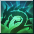

Overlord
Summoner Pet ClassOverview
| Role | DPS / Tank / Heal (thanks to pets) |
| Difficulty | Easy |
| Strengths | Very strong early game thanks to amazing synergy with Wind Pixie |
| Weaknesses | Once you reach 220 contents, the performance drops significantly |
| Why Play It | If you want to experience the summoner theme of the game, this is the class |
Skills
- Summon Mastery
 Allows you to summon 2 pets at the same time
Allows you to summon 2 pets at the same time - Miraculous Healing
- Fervor Aura
- Aura of Inspiration

- Order of Alacrity
- Lion’s Claw
- Creature Mastery

- Unholy Synergy
- Blood Synergy — this is your main skill in gear!
Rotation
The playstyle of Overlord is adaptable based on what pet you have, but the general rule is: activate all your toggles / auras, pull mobs, then use an AoE skill.
Famous Combo Pets
2 Wind Pixies
Alternate Pixie Nova between pulls/rooms.
Best Skills to Use on Wind Pixie
See the full skill details on the Wind Pixie page. Skills with P.Atk modifiers benefit most from the Blood Synergy build (STR ⇒ P.Atk of Pets).
- Flare Single target damage skill
- Pixie Nova Main AoE skill
- Prominence Burst 1 point is enough; aggro skill usable only if you lost aggro
- Pixie Glitter Single target healing spell
- Shadow Illusion
 Use on 2nd pet only. This dethreat skill lets your 2nd Pixie be a glass cannon while the main Pixie (with this skill disabled) tanks
Use on 2nd pet only. This dethreat skill lets your 2nd Pixie be a glass cannon while the main Pixie (with this skill disabled) tanks - Encouragement
 Buffs AGI/INT +100%; amazing for boosting tanking capabilities of Wind Pixie
Buffs AGI/INT +100%; amazing for boosting tanking capabilities of Wind Pixie
Important Passives (Wind Pixie)
All passive skills matter: Foresight, Knowledge is Power, Fighter Unit, Celestial Grace (Staged skill), Brilliance, etc.
To determine which skills are better, check the Wind Pixie page and look for skills with P.Atk modifiers, since Overlord scales STR ⇒ P.Atk of Pets when using the Blood Synergy build.
Alternative Playstyle
You can also play Mastermind + Electric Synergy, which works well with Ethereal Pixie and Grandmaster Hector - but this is not recommended for new players.
Talent Build
| Points | Allocation |
|---|---|
| 5 TP | 3 | 0 | 2 |
| 6 TP | 3 | 1 | 2 |
| 7 TP | 3 | 2 | 2 |
Stats
| Priority | Stat |
|---|---|
| Main Stat | STR |
| Sub Stat | INT |
Accessories
| Slot | Recommendation |
|---|---|
| Rings | 2 × Rings with +5 Creature Mastery from Circus |
| Belt | All passives and Magical/Beneficial Asura |
Pets & Belt
| Setup | Details |
|---|---|
| Early Setup | 2 Kenta, 1 Naga + Magma Golem boss card |
| Full Setup | 3 Ogres S1 + 2 Snowman + Magma Golem + Stone Gargoyle + Devil Slaughter |
| Summoned Pets | 2 × Wind Pixie |
Gear
Progression Path
- R2 helmet +20 (all skills +1)
- 1 Crossbow with 6% P.Atk, 120 STR + Magewall with 6% INT
- +5 Creature Mastery ring and Bear belt from Circus
- Parallel World gear (either max slots with trash skill, or Blood Synergy gear with trash stats / low slots whatever you can find in the Auction House)
- Island of Gods 2-handed Maces for your Wind Pixie with 6% P.Atk, 120 STR, 38+ Critical Power
- Yushiva set for increased STR/INT stats
- Medal with Blood Synergy
- Emblem with Blood Synergy
Optimization
The list above is a high-level overview. For maximum efficiency, follow this upgrade order:
- 2x Stage 5 Wind Pixies
- Boots +24 as soon as possible (+25 if you can afford it)
- Helmet +24
- Pet weapon +24
- 2x Sand Cloak +20
Gear on Wind Pixies
| Slot | Item |
|---|---|
| Weapon | 2H Mace 6% P.Atk, 38 Critical Power |
| Armor (Main Tank) | Summoner Reviac Armor ⇒ replace with Sand Cloak +20 |
| Shield | Block Shield with 4% P.Atk |
| Belt | Yushiva Belt |
Leveling Progression
Titles
Aim for titles with STR from Underground Dungeons Stage 2:
| Title | Location | Strength | Vitality |
|---|---|---|---|
| Akt II, Scene IV Allegro | Palmir Plateau | +28 | +23 |
| Akt II, Scene IV Moderato | Palmir Plateau | +23 | +19 |
| Akt II, Scene IV Andante | Palmir Plateau | +19 | +16 |
| Akt II, Scene III Allegro | Crystal Valley | +22 | +18 |
Tips
- To have an easier life as Overlord, make a Master Breeder level 153 for the Defense Mastery buff and a Gnoll Buff which you use on your main tank - this is a game changer!
- Awaken all your accessories and Crossbow/Magewall with STR.
- Use Miraculous Healing whenever it’s ready.
- Move your Wind Pixies with Shift + Left Click after casting Pixie Nova (you can avoid tanking mobs this way if you have a difficult time tanking).
- Purse of Invocation from the Cash Shop is a huge boost to your pets (500 coins).
- If your pets are Stage 5, you can put a Yushiva Belt on them.
Endgame
| Aspect | Rating |
|---|---|
| Performance | 7/10 |
| Solo Ability | 7/10 |